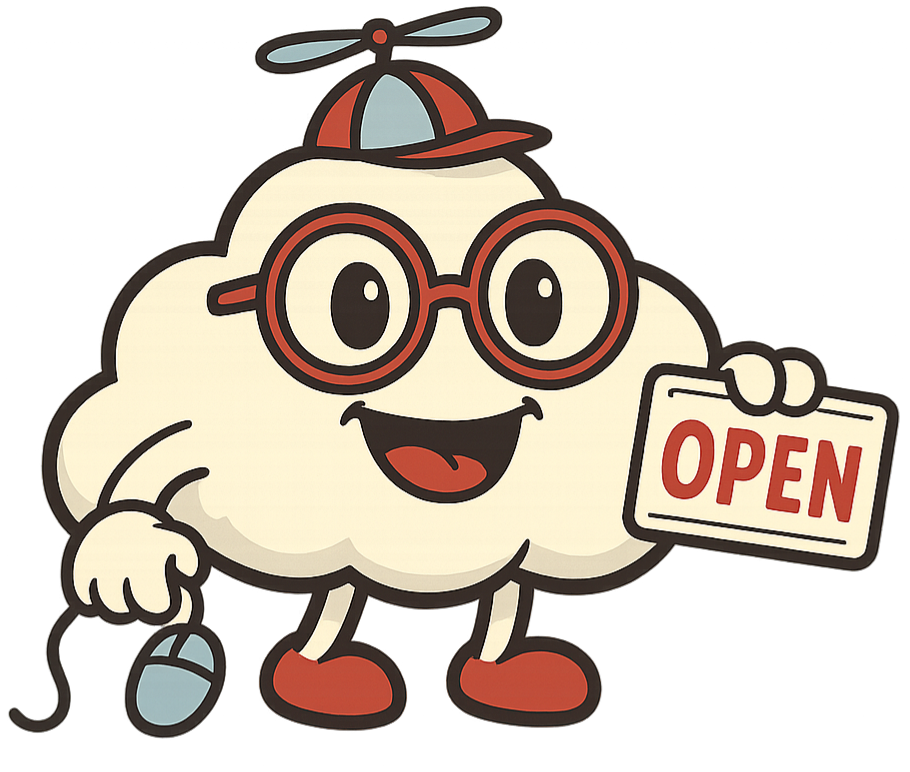

LocalBoostly
Follow us
Impulsar la digitalización de pequeños comercios locales mediante soluciones web accesibles, funcionales y humanas, permitiendo que cualquier negocio, sin importar su tamaño, tenga una presencia online profesional que potencie su crecimiento.
Ser el aliado digital de referencia para los negocios de barrio, promoviendo un ecosistema local más fuerte, conectado y preparado para competir en el entorno digital global.
Tratamos a cada cliente como un socio, con atención personalizada y trato humano.
Creamos soluciones simples, asequibles y sin complicaciones técnicas.
Cada web refleja la esencia única del comercio local al que representa.
Creemos en el valor del pequeño comercio como motor de comunidad y economía.
Aplicamos tecnología con sentido, siempre al servicio de las personas.
Weby es nuestra nube amiga, curiosa y conectada, símbolo del espíritu de LocalBoostly. Representa la cercanía, la agilidad y la conexión que ofrecemos a los pequeños comercios para que den el salto al mundo digital con una sonrisa.